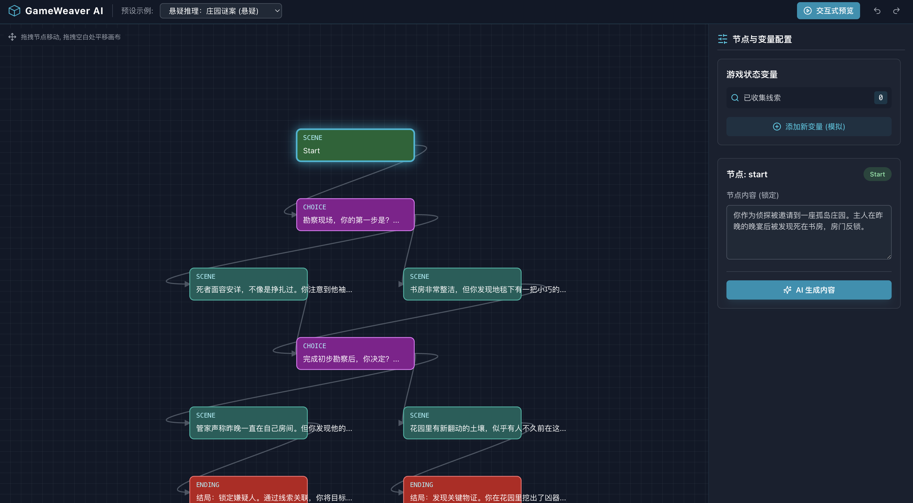
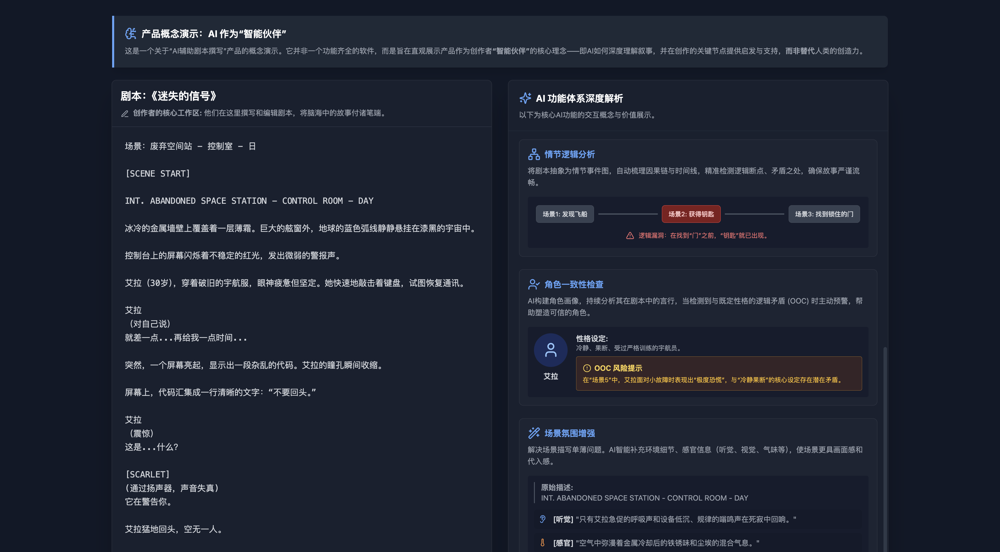
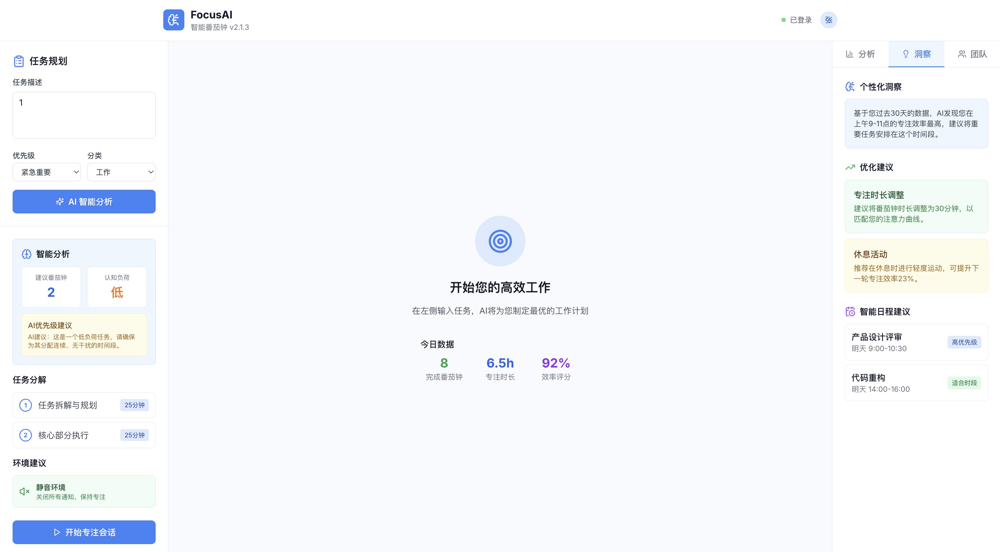
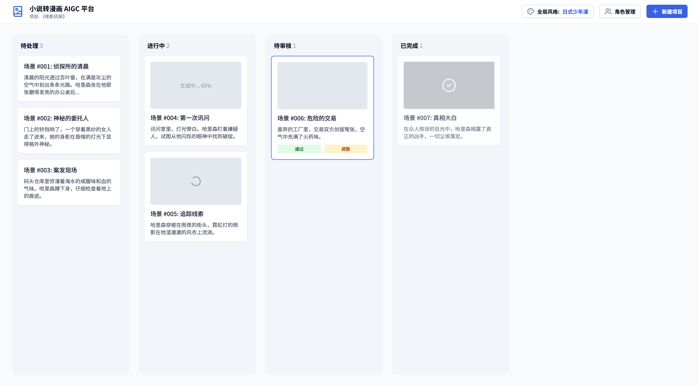
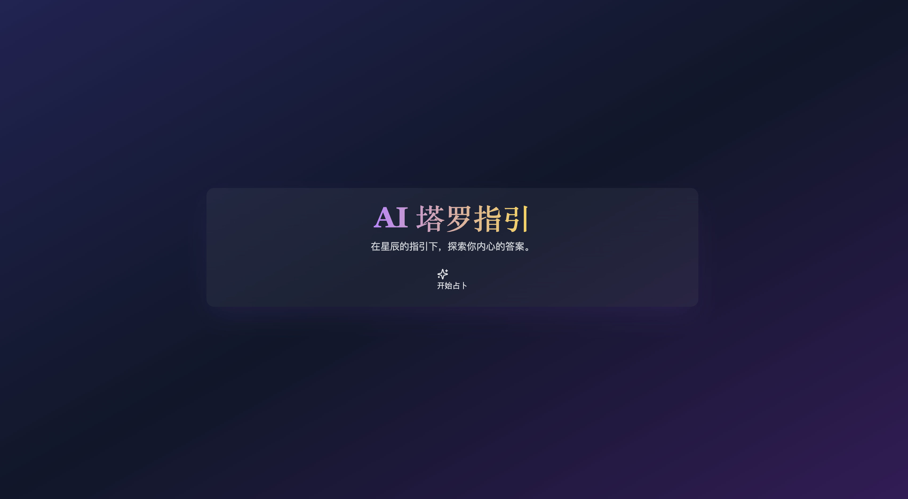

作品集

AI互动网剧制作工具
将网剧和交互式剧情游戏的结合，通过AI视频生成技术，让用户低成本创建拥有多分支剧情的沉浸式网剧。用户可根据自己的选择推动剧情走向，提升互动性与粘性，创造个性化的观影体验，解决传统制作的高成本问题。

AI剧本辅助工具
用于剧本写作场景的AI辅助工具，提供对白优化、节奏分析、情节逻辑梳理、角色一致性检测和场景细化建议等功能，目标是提高剧本创作的效率和结构完整性，辅助创作者发现并修正潜在问题。

FocusAI 智能任务助手
通过AI智能分析优化工作效率的任务管理工具。它根据任务的优先级、认知负荷及用户历史数据，提供精准的专注时段安排、番茄钟时长建议、环境调整及休息活动推荐，帮助用户高效规划每个工作环节，提升工作效率与专注力，确保每个任务在最佳条件下完成。

AI小说转漫画
用AI技术，帮助作家将小说内容快速转化为漫画。通过智能场景生成、角色管理和艺术风格选择，创作者可以轻松实现从文字到视觉的转换，省时省力，提升创作效率。无论是个人创作还是小型工作室，都可以借助该平台高效完成漫画制作。

更多项目敬请期待
正在整理更多AIGC应用项目...